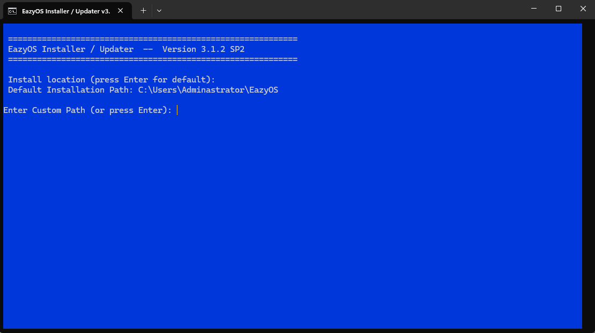
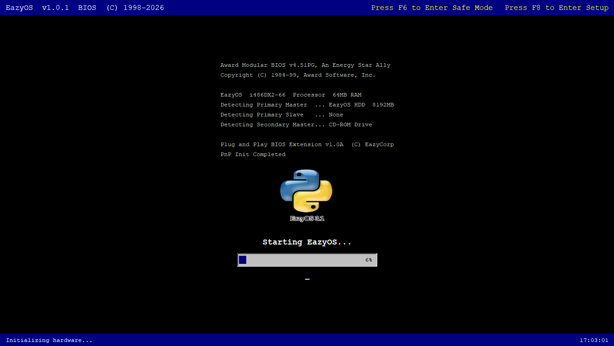
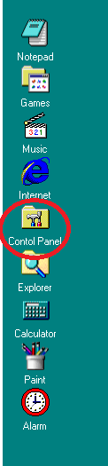

A beginner-friendly guide for installing, using, and customizing EazyOS.
To install EazyOS, download the setup from the official EazyOS website or download it directly here.
Some Firefox users may experience difficulty downloading the setup directly from our website.
To run setup, open File Explorer, navigate to your Downloads folder, and double-click setup3.1.2.bat.
Once you launch the installer, you should see something similar to the image below.

Press Enter to install EazyOS to the default location (recommended), or enter a custom installation path.
Choose Fresh Install by pressing 1 to remove any previous installation and install a clean copy.
Choose Upgrade EazyOS by pressing 2 to keep your existing files and settings.
If performing a fresh install, you'll be asked to create a username and password.
Wait for EazyOS to download and install. The installation time depends on your internet connection.
After the first phase completes, setup will install additional required components.
Once installation is complete, you should see the screen below.

When prompted, enter the username and password you created during setup.

Open the Control Panel from the desktop after logging in.

To change the desktop background color, open Display settings and choose a color under Desktop Background.
To change the wallpaper, browse for an image and click Set Wallpaper.
To change the title bar or taskbar colors, open Display settings and select a new color using the Choose button.
Open the Start Menu and select Add Username and Password.
Enter your new username and password when prompted.